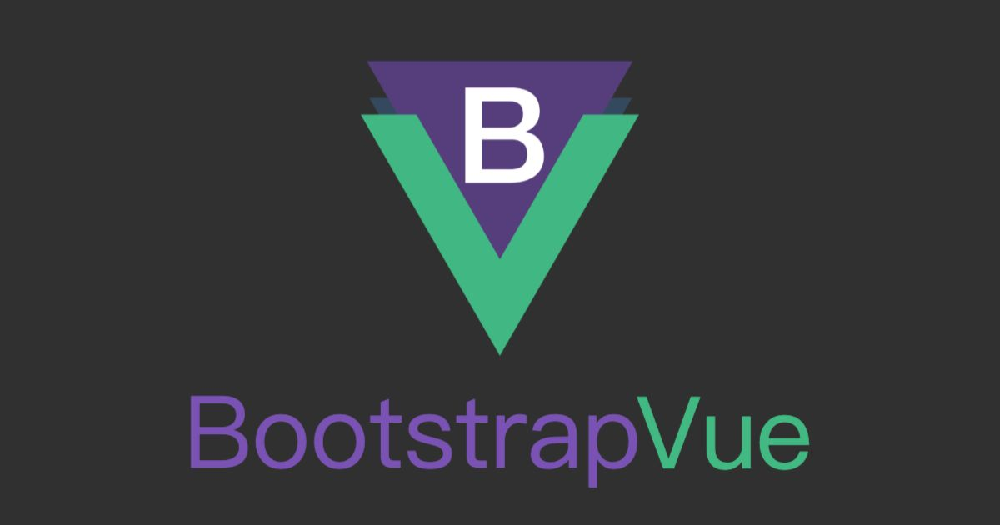
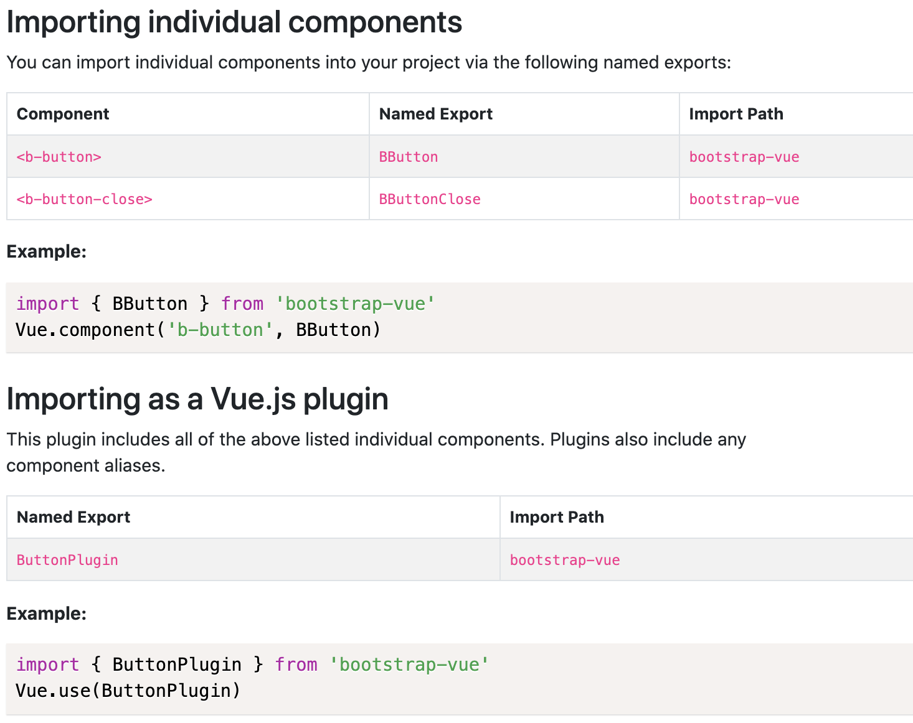

<!DOCTYPE html><html><head><meta charset="utf-8"><title>BootstrapVue：環境建置 (引入全部元件/部分元件) | Titangene Blog</title><meta http-equiv="X-UA-Compatible" content="IE=edge"><meta name="viewport" content="width=device-width,initial-scale=1,maximum-scale=1"><meta name="HandheldFriendly" content="True"><meta name="apple-mobile-web-app-capable" content="yes"><meta name="author" content="Titangene"><link rel="shortcut icon" href="/favicon.ico"><link rel="alternate" href="/atom.xml" title="Titangene Blog"><meta name="description" content="本篇介紹在 Vue CLI 環境中，要如何全部引入或部分引入 BootstrapVue 的 Vue plugin、元件、directive 和元件的樣式。"><meta property="og:type" content="article"><meta property="og:title" content="BootstrapVue：環境建置 (引入全部元件&#x2F;部分元件)"><meta property="og:url" content="https://titangene.github.io/article/bootstrap-vue-env-import-components.html"><meta property="og:site_name" content="Titangene Blog"><meta property="og:description" content="本篇介紹在 Vue CLI 環境中，要如何全部引入或部分引入 BootstrapVue 的 Vue plugin、元件、directive 和元件的樣式。"><meta property="og:locale" content="zh_TW"><meta property="og:image" content="https://titangene.github.io/images/cover/bootstrap-vue.jpg"><meta property="article:published_time" content="2020-09-06T15:58:28.000Z"><meta property="article:modified_time" content="2020-09-13T16:00:57.421Z"><meta property="article:author" content="Titangene"><meta property="article:tag" content="Vue.js"><meta property="article:tag" content="Bootstrap"><meta property="article:tag" content="w3HexSchool"><meta name="twitter:card" content="summary_large_image"><meta name="twitter:image" content="https://titangene.github.io/images/cover/bootstrap-vue.jpg"><meta name="twitter:creator" content="@titangeneTW"><meta name="twitter:site" content="@titangene_blog"><meta property="fb:admins" content="100001106016019"><meta property="fb:app_id" content="2470546159839111"><meta property="og:image:width" content="1200"><meta property="og:image:height" content="630"><meta name="google-site-verification" content="AaJ39L7h-nWwJjXJMhAMtXSF6H6BUgGWXC80kYvLic8"><link href="https://fonts.googleapis.com/css2?family=Roboto&display=swap" rel="stylesheet"><link href="https://fonts.googleapis.com/css?family=Source+Code+Pro&display=swap" rel="stylesheet"><link rel="stylesheet" href="https://cdnjs.cloudflare.com/ajax/libs/font-awesome/5.13.0/css/all.min.css"><link rel="stylesheet" href="https://unpkg.com/gitalk/dist/gitalk.css"><link rel="stylesheet" href="/style.css"><script async src="https://www.googletagmanager.com/gtag/js?id=G-KX04S5LSX1"></script><script>!function(a){function n(){dataLayer.push(arguments)}a.dataLayer=a.dataLayer||[],n("js",new Date),n("config","G-KX04S5LSX1")}(window)</script><script>function setLoadingBarProgress(e){document.getElementById("loading-bar").style.width=e+"%"}</script><meta name="generator" content="Hexo 4.2.0"><link rel="alternate" href="/atom.xml" title="Titangene Blog" type="application/atom+xml"></head></html><body><div id="loading-bar-wrapper"><div id="loading-bar"></div></div><script>setLoadingBarProgress(20)</script><header class="l_header"><div class="wrapper"><div class="nav-main container container--flex"><a class="logo flat-box" href="/">Titangene Blog</a><div class="menu"><ul class="h-list"><li><a class="flat-box nav-home" href="/">Home</a></li><li><a class="flat-box nav-archives" href="/archives">Archives</a></li></ul><div class="underline"></div></div><div class="m_search"><form name="searchform" class="form u-search-form"><input type="text" class="input u-search-input" placeholder="Search"> <i class="fas fa-search"></i></form></div><ul class="switcher h-list"><li class="s-search"><a class="fas fa-search" href="javascript:void(0)"></a></li><li class="s-menu"><a class="fas fa-bars" href="javascript:void(0)"></a></li></ul></div><div class="nav-sub container container--flex"><a class="logo flat-box" href="/">Titangene Blog</a><ul class="switcher h-list"><li class="s-comment"><a class="far fa-comment-alt" href="javascript:void(0)"></a></li><li class="s-top"><a class="fas fa-arrow-up" href="javascript:void(0)"></a></li><li class="s-toc"><a class="fas fa-list-ol" href="javascript:void(0)"></a></li></ul></div></div></header><aside class="menu-phone"><nav><a href="/" class="nav-home nav">Home </a><a href="/archives" class="nav-archives nav">Archives</a></nav></aside><script>setLoadingBarProgress(40)</script><div class="l_body"><div class="container clearfix"><div class="l_main"><article id="post-bootstrap-vue-env-import-components" class="post white-box article-type-post" itemscope itemprop="blogPost"><section class="meta"><h2 class="title"><a href="/article/bootstrap-vue-env-import-components.html">BootstrapVue：環境建置 (引入全部元件/部分元件)</a></h2><span class="post-time"><span class="post-meta-item-icon"><i class="fa fa-calendar"></i> </span><span class="post-meta-item-text">發表於</span> <time title="建立時間：2020-09-06 23:58:28" itemprop="dateCreated datePublished" datetime="2020-09-06T23:58:28+08:00">2020-09-06 </time><span class="post-meta-divider">|</span> <span class="post-meta-item-icon"><i class="fa fa-calendar-check"></i> </span><span class="post-meta-item-text">更新於</span> <time title="修改時間：2020-09-14 00:00:57" itemprop="dateModified" datetime="2020-09-14T00:00:57+08:00">2020-09-14</time></span> <span class="comments-count"><span class="post-meta-divider">|</span> <span class="post-meta-item-icon"><i class="fas fa-comment"></i> </span><a href="https://titangene.github.io/article/bootstrap-vue-env-import-components.html#comments" class="article-comment-count">留言</a></span><div class="post-category"><span class="post-meta-item-icon"><i class="fa fa-folder"></i> </span><span class="post-meta-item-text">分類於</span> <span itemprop="about" itemscope itemtype="http://schema.org/Thing"><a href="/categories/web-dev/" itemprop="url" rel="index"><span itemprop="name">web-dev</span></a></span></div></section><section class="toc-wrapper"><h3>目錄</h3><ol class="toc"><li class="toc-item toc-level-1"><a class="toc-link" href="#前言"><span class="toc-text">前言</span></a></li><li class="toc-item toc-level-1"><a class="toc-link" href="#安裝套件"><span class="toc-text">安裝套件</span></a></li><li class="toc-item toc-level-1"><a class="toc-link" href="#全部引入"><span class="toc-text">全部引入</span></a><ol class="toc-child"><li class="toc-item toc-level-2"><a class="toc-link" href="#註冊全部元件和-directive"><span class="toc-text">註冊全部元件和 directive</span></a></li><li class="toc-item toc-level-2"><a class="toc-link" href="#引入全部元件的樣式"><span class="toc-text">引入全部元件的樣式</span></a></li><li class="toc-item toc-level-2"><a class="toc-link" href="#完整範例：引入全部元件"><span class="toc-text">完整範例：引入全部元件</span></a></li></ol></li><li class="toc-item toc-level-1"><a class="toc-link" href="#部分引入"><span class="toc-text">部分引入</span></a><ol class="toc-child"><li class="toc-item toc-level-2"><a class="toc-link" href="#註冊部分元件-directive"><span class="toc-text">註冊部分元件 directive</span></a><ol class="toc-child"><li class="toc-item toc-level-3"><a class="toc-link" href="#作為-Vue-plugin-import"><span class="toc-text">作為 Vue plugin import</span></a></li><li class="toc-item toc-level-3"><a class="toc-link" href="#引入單一元件"><span class="toc-text">引入單一元件</span></a></li></ol></li><li class="toc-item toc-level-2"><a class="toc-link" href="#範例：引入部分元件"><span class="toc-text">範例：引入部分元件</span></a></li><li class="toc-item toc-level-2"><a class="toc-link" href="#引入部分元件的樣式"><span class="toc-text">引入部分元件的樣式</span></a></li><li class="toc-item toc-level-2"><a class="toc-link" href="#範例：引入部分元件的樣式"><span class="toc-text">範例：引入部分元件的樣式</span></a></li></ol></li></ol></section><section class="article typo"><div class="article-entry" itemprop="articleBody"><p></p><p>本篇介紹在 Vue CLI 環境中，要如何全部引入或部分引入 BootstrapVue 的 Vue plugin、元件、directive 和元件的樣式。</p><a id="more"></a><h1 id="前言"><a class="header-anchor" href="#前言"></a>前言</h1><p>BootstrapVue 是 Bootstrap 框架與 Vue.js 整合的套件，其中包含多種 Bootstrap 元件、網格系統 … 等東西。</p><p>若要部分引入 BootstrapVue 元件，就不建議使用 <a href="https://github.com/GregYankovoy/vue-cli-plugin-bootstrap-vue" target="_blank" rel="noopener">vue-cli-plugin-bootstrap-vue (Bootstrap-Vue Vue CLI 3 plugin)</a>，因為還需自己另外設定，乾脆自己手動建置環境。</p><h1 id="安裝套件"><a class="header-anchor" href="#安裝套件"></a>安裝套件</h1><figure class="highlight shell"><table><tr><td class="gutter"><pre><span class="line">1</span><br></pre></td><td class="code"><pre><code class="hljs shell"><span class="hljs-meta">$</span><span class="bash"> npm i bootstrap-vue bootstrap</span><br></code></pre></td></tr></table></figure><p>或</p><figure class="highlight shell"><table><tr><td class="gutter"><pre><span class="line">1</span><br></pre></td><td class="code"><pre><code class="hljs shell"><span class="hljs-meta">$</span><span class="bash"> yarn add bootstrap-vue bootstrap</span><br></code></pre></td></tr></table></figure><h1 id="全部引入"><a class="header-anchor" href="#全部引入"></a>全部引入</h1><h2 id="註冊全部元件和-directive"><a class="header-anchor" href="#註冊全部元件和-directive"></a>註冊全部元件和 directive</h2><p>在 app 進入點註冊 BootstrapVue：</p><figure class="highlight javascript"><table><tr><td class="gutter"><pre><span class="line">1</span><br><span class="line">2</span><br><span class="line">3</span><br><span class="line">4</span><br><span class="line">5</span><br><span class="line">6</span><br><span class="line">7</span><br></pre></td><td class="code"><pre><code class="hljs javascript"><span class="hljs-keyword">import</span> Vue <span class="hljs-keyword">from</span> <span class="hljs-string">'vue'</span>;<br><span class="hljs-keyword">import</span> &#123; BootstrapVue, IconsPlugin &#125; <span class="hljs-keyword">from</span> <span class="hljs-string">'bootstrap-vue'</span>;<br><br><span class="hljs-comment">// 安裝 BootstrapVue</span><br>Vue.use(BootstrapVue);<br><span class="hljs-comment">// 安裝 BootstrapVue icon components plugin (可選)</span><br>Vue.use(IconsPlugin);<br></code></pre></td></tr></table></figure><h2 id="引入全部元件的樣式"><a class="header-anchor" href="#引入全部元件的樣式"></a>引入全部元件的樣式</h2><p>import Bootstrap 和 BootstrapVue 的 <code>css</code> 檔：</p><figure class="highlight javascript"><table><tr><td class="gutter"><pre><span class="line">1</span><br><span class="line">2</span><br></pre></td><td class="code"><pre><code class="hljs javascript"><span class="hljs-keyword">import</span> <span class="hljs-string">'bootstrap/dist/css/bootstrap.css'</span>;<br><span class="hljs-keyword">import</span> <span class="hljs-string">'bootstrap-vue/dist/bootstrap-vue.css'</span>;<br></code></pre></td></tr></table></figure><p>或在自訂的 SCSS 檔內 (例如：<code>custom.scss</code> ) import Bootstrap 和 BootstrapVue 的 <code>scss</code> 檔：</p><figure class="highlight scss"><table><tr><td class="gutter"><pre><span class="line">1</span><br><span class="line">2</span><br><span class="line">3</span><br><span class="line">4</span><br><span class="line">5</span><br><span class="line">6</span><br><span class="line">7</span><br><span class="line">8</span><br><span class="line">9</span><br></pre></td><td class="code"><pre><code class="hljs scss"><span class="hljs-comment">// ====================================</span><br><span class="hljs-comment">// # Bootstrap</span><br><br><span class="hljs-keyword">@import</span> <span class="hljs-string">'node_modules/bootstrap/scss/bootstrap'</span>;<br><br><span class="hljs-comment">// ====================================</span><br><span class="hljs-comment">// # BootstrapVue</span><br><br><span class="hljs-keyword">@import</span> <span class="hljs-string">'node_modules/bootstrap-vue/src/index.scss'</span>;<br></code></pre></td></tr></table></figure><p>然後在 app 進入點引入：</p><figure class="highlight javascript"><table><tr><td class="gutter"><pre><span class="line">1</span><br></pre></td><td class="code"><pre><code class="hljs javascript"><span class="hljs-keyword">import</span> <span class="hljs-string">'./custom.scss'</span>;<br></code></pre></td></tr></table></figure><p>將所有 SCSS <code>@import</code> 至單個 SCSS 檔中，然後將該檔案 import 至專案中。預設單個 SCSS 檔 import 至專案，不會在檔案之間共享變數值和函數 (因可避免變數和函數的命名衝突)。</p><p>Webpack 和 Parcel 支援在 <code>scss</code> 模組前加上 <code>~</code> 來引入 <code>scss</code> 檔案：</p><figure class="highlight scss"><table><tr><td class="gutter"><pre><span class="line">1</span><br><span class="line">2</span><br></pre></td><td class="code"><pre><code class="hljs scss"><span class="hljs-keyword">@import</span> <span class="hljs-string">'~bootstrap'</span>;<br><span class="hljs-keyword">@import</span> <span class="hljs-string">'~bootstrap-vue'</span>;<br></code></pre></td></tr></table></figure><div class="info"><p>可用 <code>~</code> 引入是因為 sass-loader 使用 Sass 的自訂 importer 功能將所有 query 傳給 Webpack resloving engine，所以才能從 <code>node_modules</code> import Sass 模組。只需在前面加上 <code>~</code> 來告訴 Webpack 這不是 relative import。</p><p>資料來源：<a href="https://webpack.js.org/loaders/sass-loader/#resolving-import-at-rules" target="_blank" rel="noopener">sass-loader - Resolving import at-rules | webpack</a></p></div><h2 id="完整範例：引入全部元件"><a class="header-anchor" href="#完整範例：引入全部元件"></a>完整範例：引入全部元件</h2><p>引入全部樣式：</p><figure class="highlight scss"><table><tr><td class="gutter"><pre><span class="line">1</span><br><span class="line">2</span><br><span class="line">3</span><br></pre></td><td class="code"><pre><code class="hljs scss"><span class="hljs-comment">// src/assets/scss/vendors/bootstrap-vue.scss</span><br><span class="hljs-keyword">@import</span> <span class="hljs-string">'~bootstrap'</span>;<br><span class="hljs-keyword">@import</span> <span class="hljs-string">'~bootstrap-vue'</span>;<br></code></pre></td></tr></table></figure><p>引入全部元件：</p><figure class="highlight javascript"><table><tr><td class="gutter"><pre><span class="line">1</span><br><span class="line">2</span><br><span class="line">3</span><br><span class="line">4</span><br><span class="line">5</span><br><span class="line">6</span><br><span class="line">7</span><br><span class="line">8</span><br><span class="line">9</span><br><span class="line">10</span><br></pre></td><td class="code"><pre><code class="hljs javascript"><span class="hljs-comment">// src/plugins/bootstrap-vue.js</span><br><span class="hljs-keyword">import</span> Vue <span class="hljs-keyword">from</span> <span class="hljs-string">'vue'</span>;<br><span class="hljs-keyword">import</span> &#123; BootstrapVue, IconsPlugin &#125; <span class="hljs-keyword">from</span> <span class="hljs-string">'bootstrap-vue'</span>;<br><br><span class="hljs-keyword">import</span> <span class="hljs-string">'@/assets/scss/vendors/bootstrap-vue.scss'</span>;<br><br><span class="hljs-comment">// 安裝 BootstrapVue</span><br>Vue.use(BootstrapVue);<br><span class="hljs-comment">// 安裝 BootstrapVue icon components plugin (可選)</span><br>Vue.use(IconsPlugin);<br></code></pre></td></tr></table></figure><p>在 app 進入點：</p><figure class="highlight javascript"><table><tr><td class="gutter"><pre><span class="line">1</span><br><span class="line">2</span><br><span class="line">3</span><br><span class="line">4</span><br><span class="line">5</span><br><span class="line">6</span><br><span class="line">7</span><br><span class="line">8</span><br><span class="line">9</span><br><span class="line">10</span><br><span class="line">11</span><br><span class="line">12</span><br><span class="line">13</span><br><span class="line">14</span><br><span class="line">15</span><br><span class="line">16</span><br><span class="line">17</span><br><span class="line">18</span><br></pre></td><td class="code"><pre><code class="hljs javascript"><span class="hljs-comment">// src/main.js</span><br><span class="hljs-keyword">import</span> Vue <span class="hljs-keyword">from</span> <span class="hljs-string">'vue'</span>;<br><span class="hljs-keyword">import</span> router <span class="hljs-keyword">from</span> <span class="hljs-string">'./router/IndexRouter'</span>;<br><span class="hljs-keyword">import</span> store <span class="hljs-keyword">from</span> <span class="hljs-string">'./store'</span>;<br><br><span class="hljs-keyword">import</span> <span class="hljs-string">'./plugins/bootstrap-vue.js'</span>;<br><br><span class="hljs-keyword">import</span> <span class="hljs-string">'./assets/scss/main.scss'</span>;<br><br><span class="hljs-keyword">import</span> App <span class="hljs-keyword">from</span> <span class="hljs-string">'./App.vue'</span>;<br><br>Vue.config.productionTip = <span class="hljs-literal">false</span>;<br><br><span class="hljs-keyword">new</span> Vue(&#123;<br>  router,<br>  store,<br>  render: <span class="hljs-function"><span class="hljs-params">h</span> =&gt;</span> h(App)<br>&#125;).$mount(<span class="hljs-string">'#app'</span>);<br></code></pre></td></tr></table></figure><p>若有自訂的 Sass 檔，記得要 import 在 BootstrapVue 之後，這樣自訂的 Sass 變數、樣式等東西才會覆蓋 BootstrapVue 和 Bootstrap 的 Sass</p><h1 id="部分引入"><a class="header-anchor" href="#部分引入"></a>部分引入</h1><p>當你用 Vue CLI 來建置環境，就會使用到 module bundler，常見的就是 Webpack。你可以選擇引入所需的特定 component groups (plugins)、component 和/或 directives，利用 module bundler 提供的 tree shaking 功能來減少 bundle 的大小。</p><h2 id="註冊部分元件-directive"><a class="header-anchor" href="#註冊部分元件-directive"></a>註冊部分元件 directive</h2><h3 id="作為-Vue-plugin-import"><a class="header-anchor" href="#作為-Vue-plugin-import"></a>作為 Vue plugin import</h3><p>可從 <code>bootstrap-vue</code> 將 component groups 和 directives 作為 Vue plugin import。</p><p>import Vue plugin 的範例：</p><figure class="highlight javascript"><table><tr><td class="gutter"><pre><span class="line">1</span><br><span class="line">2</span><br><span class="line">3</span><br><span class="line">4</span><br><span class="line">5</span><br><span class="line">6</span><br><span class="line">7</span><br><span class="line">8</span><br><span class="line">9</span><br><span class="line">10</span><br><span class="line">11</span><br><span class="line">12</span><br><span class="line">13</span><br><span class="line">14</span><br><span class="line">15</span><br></pre></td><td class="code"><pre><code class="hljs javascript"><span class="hljs-comment">// 引入所有佈局元件，包括 &lt;b-container&gt;, &lt;b-row&gt;, &lt;b-col&gt;</span><br><span class="hljs-keyword">import</span> &#123; LayoutPlugin &#125; <span class="hljs-keyword">from</span> <span class="hljs-string">'bootstrap-vue'</span>;<br>Vue.use(LayoutPlugin);<br><br><span class="hljs-comment">// 引入 &lt;b-modal&gt; 元件和 v-b-modal directive</span><br><span class="hljs-keyword">import</span> &#123; ModalPlugin &#125; <span class="hljs-keyword">from</span> <span class="hljs-string">'bootstrap-vue'</span>;<br>Vue.use(ModalPlugin);<br><br><span class="hljs-comment">// 引入 &lt;b-card&gt; 元件和其所有 &lt;b-card-*&gt; 子元件</span><br><span class="hljs-keyword">import</span> &#123; CardPlugin &#125; <span class="hljs-keyword">from</span> <span class="hljs-string">'bootstrap-vue'</span>;<br>Vue.use(CardPlugin);<br><br><span class="hljs-comment">// 引入 v-b-scrollspy directive</span><br><span class="hljs-keyword">import</span> &#123; VBScrollspyPlugin &#125; <span class="hljs-keyword">from</span> <span class="hljs-string">'bootstrap-vue'</span>;<br>Vue.use(VBScrollspyPlugin);<br></code></pre></td></tr></table></figure><p>作為 plugin import 時，大部分都會 import 所有子元件和相關 directive。例如：import <code>&lt;b-nav&gt;</code> 時，還包含所有 <code>&lt;nav-*&gt;</code> 子元件和所有 dropdown 子元件。</p><p>plugin 中包含了元件和 shorthand aliases (簡寫別名，如果有的話)，詳情請參閱各元件和 directive 的文件 (通常在各元件文件的最底部有告訴你如何 import 獨立元件和 Vue plugin)：</p><p></p><p>若要 import 多個元件和/或 directive，請將所有 import 都含在單一 <code>import</code> 陳述句內，以達到最佳的 tree shaking。</p><h3 id="引入單一元件"><a class="header-anchor" href="#引入單一元件"></a>引入單一元件</h3><p>以上是直接引入 Vue plugin 的做法，會一次 import 多個元件或 directive，而接著要介紹只 import 單一元件的做法。</p><p>以 BootstrapVue 的 <a href="https://bootstrap-vue.org/docs/components/button#importing-individual-components" target="_blank" rel="noopener">Button</a> 元件為例，就有 <code>&lt;b-button&gt;</code> 和 <code>&lt;b-button-close&gt;</code> 這兩個元件，所以 <code>ButtonPlugin</code> 包含了這兩個元件，原始碼如下：</p><figure class="highlight javascript"><table><tr><td class="gutter"><pre><span class="line">1</span><br><span class="line">2</span><br><span class="line">3</span><br><span class="line">4</span><br><span class="line">5</span><br><span class="line">6</span><br><span class="line">7</span><br><span class="line">8</span><br><span class="line">9</span><br><span class="line">10</span><br><span class="line">11</span><br><span class="line">12</span><br><span class="line">13</span><br><span class="line">14</span><br><span class="line">15</span><br></pre></td><td class="code"><pre><code class="hljs javascript"><span class="hljs-comment">// bootstrap-vue/src/components/button/index.js</span><br><span class="hljs-keyword">import</span> &#123; BButton &#125; <span class="hljs-keyword">from</span> <span class="hljs-string">'./button'</span><br><span class="hljs-keyword">import</span> &#123; BButtonClose &#125; <span class="hljs-keyword">from</span> <span class="hljs-string">'./button-close'</span><br><span class="hljs-keyword">import</span> &#123; pluginFactory &#125; <span class="hljs-keyword">from</span> <span class="hljs-string">'../../utils/plugins'</span><br><br><span class="hljs-keyword">const</span> ButtonPlugin = <span class="hljs-comment">/*#__PURE__*/</span> pluginFactory(&#123;<br>  components: &#123;<br>    BButton,<br>    BBtn: BButton,<br>    BButtonClose,<br>    BBtnClose: BButtonClose<br>  &#125;<br>&#125;)<br><br><span class="hljs-keyword">export</span> &#123; ButtonPlugin, BButton, BButtonClose &#125;<br></code></pre></td></tr></table></figure><p>另外也可以看到 shorthand aliases：</p><ul><li><code>BBtn</code> 和 <code>BButton</code> 是同一個元件</li><li><code>BBtnClose</code> 和 <code>BButtonClose</code> 是同一個元件</li></ul><p>所以若要引入單一元件只要這樣引入即可：</p><figure class="highlight javascript"><table><tr><td class="gutter"><pre><span class="line">1</span><br><span class="line">2</span><br><span class="line">3</span><br></pre></td><td class="code"><pre><code class="hljs javascript"><span class="hljs-comment">// 引入 &lt;b-button&gt; 元件</span><br><span class="hljs-keyword">import</span> &#123; BButton &#125; <span class="hljs-keyword">from</span> <span class="hljs-string">'bootstrap-vue'</span>;<br>Vue.component(<span class="hljs-string">'b-button'</span>, BButton);<br></code></pre></td></tr></table></figure><h2 id="範例：引入部分元件"><a class="header-anchor" href="#範例：引入部分元件"></a>範例：引入部分元件</h2><ul><li>有些元件比較單純，所以可以只 import 單一元件<ul><li>例如：只需要 <a href="https://bootstrap-vue.org/docs/components/button#importing-individual-components" target="_blank" rel="noopener">Button</a> 元件中的 <code>&lt;b-button&gt;</code> 元件</li></ul></li><li>而有些元件則比較複雜，有很多子元件或相依的 Vue plugin。若手動自己 import 會很麻煩，所以需要直接透過 Vue plugin 來 import<ul><li>例如：<a href="https://bootstrap-vue.org/docs/components/navbar#importing-as-a-plugin" target="_blank" rel="noopener">Navbar</a> 元件有很多子元件，且相依於 <code>NavPlugin</code>、<code>DropdownPlugin</code> 和 <code>CollapsePlugin</code></li></ul></li></ul><p>從 <a href="https://bootstrap-vue.org/docs/components/navbar#importing-as-a-plugin" target="_blank" rel="noopener">Navbar</a> 元件的原始碼可以看到這些很多子元件和相依的 Vue plugin：</p><figure class="highlight javascript"><table><tr><td class="gutter"><pre><span class="line">1</span><br><span class="line">2</span><br><span class="line">3</span><br><span class="line">4</span><br><span class="line">5</span><br><span class="line">6</span><br><span class="line">7</span><br><span class="line">8</span><br><span class="line">9</span><br><span class="line">10</span><br><span class="line">11</span><br><span class="line">12</span><br><span class="line">13</span><br><span class="line">14</span><br><span class="line">15</span><br><span class="line">16</span><br><span class="line">17</span><br><span class="line">18</span><br><span class="line">19</span><br><span class="line">20</span><br><span class="line">21</span><br><span class="line">22</span><br><span class="line">23</span><br><span class="line">24</span><br><span class="line">25</span><br><span class="line">26</span><br></pre></td><td class="code"><pre><code class="hljs javascript"><span class="hljs-comment">// bootstrap-vue/src/components/navbar/index.js</span><br><span class="hljs-keyword">import</span> &#123; BNavbar &#125; <span class="hljs-keyword">from</span> <span class="hljs-string">'./navbar'</span><br><span class="hljs-keyword">import</span> &#123; BNavbarNav &#125; <span class="hljs-keyword">from</span> <span class="hljs-string">'./navbar-nav'</span><br><span class="hljs-keyword">import</span> &#123; BNavbarBrand &#125; <span class="hljs-keyword">from</span> <span class="hljs-string">'./navbar-brand'</span><br><span class="hljs-keyword">import</span> &#123; BNavbarToggle &#125; <span class="hljs-keyword">from</span> <span class="hljs-string">'./navbar-toggle'</span><br><span class="hljs-keyword">import</span> &#123; NavPlugin &#125; <span class="hljs-keyword">from</span> <span class="hljs-string">'../nav'</span><br><span class="hljs-keyword">import</span> &#123; CollapsePlugin &#125; <span class="hljs-keyword">from</span> <span class="hljs-string">'../collapse'</span><br><span class="hljs-keyword">import</span> &#123; DropdownPlugin &#125; <span class="hljs-keyword">from</span> <span class="hljs-string">'../dropdown'</span><br><span class="hljs-keyword">import</span> &#123; pluginFactory &#125; <span class="hljs-keyword">from</span> <span class="hljs-string">'../../utils/plugins'</span><br><br><span class="hljs-keyword">const</span> NavbarPlugin = <span class="hljs-comment">/*#__PURE__*/</span> pluginFactory(&#123;<br>  components: &#123;<br>    BNavbar,<br>    BNavbarNav,<br>    BNavbarBrand,<br>    BNavbarToggle,<br>    BNavToggle: BNavbarToggle<br>  &#125;,<br>  plugins: &#123;<br>    NavPlugin,<br>    CollapsePlugin,<br>    DropdownPlugin<br>  &#125;<br>&#125;)<br><br><span class="hljs-keyword">export</span> &#123; NavbarPlugin, BNavbar, BNavbarNav, BNavbarBrand, BNavbarToggle &#125;<br></code></pre></td></tr></table></figure><p>所以若要使用 Button 元件和 Navbar 元件就會這樣 import：</p><figure class="highlight javascript"><table><tr><td class="gutter"><pre><span class="line">1</span><br><span class="line">2</span><br><span class="line">3</span><br><span class="line">4</span><br><span class="line">5</span><br><span class="line">6</span><br><span class="line">7</span><br><span class="line">8</span><br><span class="line">9</span><br><span class="line">10</span><br><span class="line">11</span><br><span class="line">12</span><br><span class="line">13</span><br><span class="line">14</span><br><span class="line">15</span><br><span class="line">16</span><br><span class="line">17</span><br><span class="line">18</span><br><span class="line">19</span><br><span class="line">20</span><br><span class="line">21</span><br></pre></td><td class="code"><pre><code class="hljs javascript"><span class="hljs-comment">// src/plugins/bootstrap-vue.js</span><br><span class="hljs-keyword">import</span> Vue <span class="hljs-keyword">from</span> <span class="hljs-string">'vue'</span>;<br><br><span class="hljs-keyword">import</span> <span class="hljs-string">'@/assets/scss/bootstrap.scss'</span>;<br><br><span class="hljs-comment">// 引入 &lt;b-button&gt; 元件</span><br><span class="hljs-keyword">import</span> &#123; BButton &#125; <span class="hljs-keyword">from</span> <span class="hljs-string">'bootstrap-vue'</span>;<br>Vue.component(<span class="hljs-string">'b-button'</span>, BButton);<br><br><span class="hljs-comment">// 引入 Navbar 元件：&lt;b-navbar&gt;，</span><br><span class="hljs-comment">// 和 Navbar 的子元件，包括：&lt;b-navbar-nav&gt;, &lt;b-navbar-brand&gt;, &lt;b-navbar-toggle&gt;，</span><br><span class="hljs-comment">// 以及其相依的 Vue plugin，包括：NavPlugin, CollapsePlugin, DropdownPlugin</span><br><span class="hljs-comment">// - NavPlugin 包括：&lt;b-nav&gt;, &lt;b-nav-item&gt;, &lt;b-nav-text&gt;,</span><br><span class="hljs-comment">//                  &lt;b-nav-form&gt;, &lt;b-nav-item-dropdown&gt;</span><br><span class="hljs-comment">// - CollapsePlugin 包括：&lt;b-collapse&gt;</span><br><span class="hljs-comment">// - DropdownPlugin 包括：&lt;b-dropdown&gt;, &lt;b-dropdown-item&gt;,</span><br><span class="hljs-comment">//                       &lt;b-dropdown-item-button&gt;, &lt;b-dropdown-divider&gt;,</span><br><span class="hljs-comment">//                       &lt;b-dropdown-form&gt;, &lt;b-dropdown-text&gt;,</span><br><span class="hljs-comment">//                       &lt;b-dropdown-group&gt;, &lt;b-dropdown-header&gt;</span><br><span class="hljs-keyword">import</span> &#123; NavbarPlugin &#125; <span class="hljs-keyword">from</span> <span class="hljs-string">'bootstrap-vue'</span>;<br>Vue.use(NavbarPlugin);<br></code></pre></td></tr></table></figure><h2 id="引入部分元件的樣式"><a class="header-anchor" href="#引入部分元件的樣式"></a>引入部分元件的樣式</h2><ul><li>要部分引入 BootstrapVue 的樣式，請參閱 <a href="https://github.com/twbs/bootstrap/blob/main/scss/bootstrap.scss" target="_blank" rel="noopener">bootstrap/scss/bootstrap.scss</a></li><li>要部分引入 Bootstrap 的樣式，請參閱 <a href="https://github.com/bootstrap-vue/bootstrap-vue/blob/dev/src/components/index.scss" target="_blank" rel="noopener">bootstrap-vue/src/components/index.scss</a></li></ul><p>建議手動引入相依元件的樣式！</p><p>但是，有些元件若有仔細看原始碼，就會發現不需要引入所有的相依元件，以 Navbar 元件為例，原本可能要這樣引入：</p><figure class="highlight scss"><table><tr><td class="gutter"><pre><span class="line">1</span><br><span class="line">2</span><br><span class="line">3</span><br></pre></td><td class="code"><pre><code class="hljs scss"><span class="hljs-keyword">@import</span> <span class="hljs-string">'~bootstrap-vue/src/components/navbar'</span>;<br><span class="hljs-keyword">@import</span> <span class="hljs-string">'~bootstrap-vue/src/components/nav'</span>;<br><span class="hljs-keyword">@import</span> <span class="hljs-string">'~bootstrap-vue/src/components/dropdown'</span>;<br></code></pre></td></tr></table></figure><p>但若詳細看這些相依元件的樣式原始碼，就會找到重複的引入。</p><p>Navbar 元件的樣式：</p><figure class="highlight scss"><table><tr><td class="gutter"><pre><span class="line">1</span><br><span class="line">2</span><br><span class="line">3</span><br><span class="line">4</span><br><span class="line">5</span><br></pre></td><td class="code"><pre><code class="hljs scss"><span class="hljs-comment">// bootstrap-vue/src/components/navbar/index.scss</span><br><span class="hljs-keyword">@import</span> <span class="hljs-string">"navbar"</span>;<br><br><span class="hljs-comment">// bootstrap-vue/src/components/navbar/_navbar.scss</span><br><span class="hljs-keyword">@import</span> <span class="hljs-string">"../dropdown/index"</span>;<br></code></pre></td></tr></table></figure><p>Nav 元件的樣式：</p><figure class="highlight scss"><table><tr><td class="gutter"><pre><span class="line">1</span><br><span class="line">2</span><br><span class="line">3</span><br><span class="line">4</span><br><span class="line">5</span><br></pre></td><td class="code"><pre><code class="hljs scss"><span class="hljs-comment">// bootstrap-vue/src/components/nav/index.scss</span><br><span class="hljs-keyword">@import</span> <span class="hljs-string">"nav-item-dropdown"</span>;<br><br><span class="hljs-comment">// bootstrap-vue/src/components/navbar/_nav-item-dropdown.scss</span><br><span class="hljs-keyword">@import</span> <span class="hljs-string">"../dropdown/index"</span>;<br></code></pre></td></tr></table></figure><p>Dropdown 元件的樣式：</p><figure class="highlight scss"><table><tr><td class="gutter"><pre><span class="line">1</span><br><span class="line">2</span><br><span class="line">3</span><br><span class="line">4</span><br></pre></td><td class="code"><pre><code class="hljs scss"><span class="hljs-comment">// bootstrap-vue/src/components/dropdown/index.scss</span><br><span class="hljs-keyword">@import</span> <span class="hljs-string">"dropdown"</span>;<br><span class="hljs-keyword">@import</span> <span class="hljs-string">"dropdown-form"</span>;<br><span class="hljs-keyword">@import</span> <span class="hljs-string">"dropdown-text"</span>;<br></code></pre></td></tr></table></figure><p>可以從上面這些元件看得出來，其實 Navbar 和 Nav 元件都引用了 Dropdown 元件的樣式，所以只需要引入 Navbar 元件的樣式即可。</p><h2 id="範例：引入部分元件的樣式"><a class="header-anchor" href="#範例：引入部分元件的樣式"></a>範例：引入部分元件的樣式</h2><ul><li>Bootstrap<ul><li>前面是 Bootstrap 基本要引入的：<ul><li><code>functions</code>、<code>variables</code>、<code>mixins</code></li><li><code>root</code>：在 root 元素 (即 <code>html</code> 元素) 上的設定，只設定 CSS 變數而已</li><li><code>reboot</code> (可選)：Bootstrap 的 reset CSS</li></ul></li><li>Bootstrap 網格 (可選)：<code>grid</code></li><li>Bootstrap 元件的樣式</li><li>Bootstrap 的 <code>utilities</code> (可選)</li></ul></li><li>BootstrapVue 元件的樣式</li></ul><figure class="highlight scss"><table><tr><td class="gutter"><pre><span class="line">1</span><br><span class="line">2</span><br><span class="line">3</span><br><span class="line">4</span><br><span class="line">5</span><br><span class="line">6</span><br><span class="line">7</span><br><span class="line">8</span><br><span class="line">9</span><br><span class="line">10</span><br><span class="line">11</span><br><span class="line">12</span><br><span class="line">13</span><br><span class="line">14</span><br><span class="line">15</span><br><span class="line">16</span><br><span class="line">17</span><br><span class="line">18</span><br><span class="line">19</span><br><span class="line">20</span><br><span class="line">21</span><br><span class="line">22</span><br><span class="line">23</span><br><span class="line">24</span><br><span class="line">25</span><br><span class="line">26</span><br></pre></td><td class="code"><pre><code class="hljs scss"><span class="hljs-comment">// src/assets/scss/vendors/bootstrap-vue.scss</span><br><br><span class="hljs-comment">// ====================================</span><br><span class="hljs-comment">// # Bootstrap</span><br><br><span class="hljs-keyword">@import</span> <span class="hljs-string">'~bootstrap/scss/functions'</span>;<br><span class="hljs-keyword">@import</span> <span class="hljs-string">'~bootstrap/scss/variables'</span>;<br><span class="hljs-keyword">@import</span> <span class="hljs-string">'~bootstrap/scss/mixins'</span>;<br><span class="hljs-keyword">@import</span> <span class="hljs-string">'~bootstrap/scss/root'</span>;<br><span class="hljs-keyword">@import</span> <span class="hljs-string">'~bootstrap/scss/reboot'</span>;<br><br><span class="hljs-comment">// Bootstrap 網格</span><br><span class="hljs-keyword">@import</span> <span class="hljs-string">'~bootstrap/scss/grid'</span>;<br><br><span class="hljs-comment">// Bootstrap 元件</span><br><span class="hljs-keyword">@import</span> <span class="hljs-string">'~bootstrap/scss/transitions'</span>;<br><span class="hljs-keyword">@import</span> <span class="hljs-string">'~bootstrap/scss/dropdown'</span>;<br><span class="hljs-keyword">@import</span> <span class="hljs-string">'~bootstrap/scss/nav'</span>;<br><span class="hljs-keyword">@import</span> <span class="hljs-string">'~bootstrap/scss/navbar'</span>;<br><br><span class="hljs-keyword">@import</span> <span class="hljs-string">'~bootstrap/scss/utilities'</span>;<br><br><span class="hljs-comment">// ====================================</span><br><span class="hljs-comment">// # BootstrapVue</span><br><br><span class="hljs-keyword">@import</span> <span class="hljs-string">'~bootstrap-vue/src/components/navbar'</span>;<br></code></pre></td></tr></table></figure><p>資料來源：<a href="https://bootstrap-vue.org/docs" target="_blank" rel="noopener">Getting Started | BootstrapVue</a></p></div><div class="article-tags tags"><a href="/tags/vue-js/" title="Vue.js">Vue.js</a> <a href="/tags/bootstrap/" title="Bootstrap">Bootstrap</a> <a href="/tags/w3hexschool/" title="w3HexSchool">w3HexSchool</a></div></section><div class="article-share-links"><span>分享：</span> <a class="fab fa-facebook-f" title="Facebook" target="_blank" href="https://www.facebook.com/sharer.php?u=https%3A%2F%2Ftitangene.github.io%2Farticle%2Fbootstrap-vue-env-import-components.html"></a> <a class="fab fa-twitter" title="Twitter" target="_blank" href="https://twitter.com/share?url=https%3A%2F%2Ftitangene.github.io%2Farticle%2Fbootstrap-vue-env-import-components.html&amp;text=BootstrapVue：環境建置 (引入全部元件/部分元件)&amp;hashtags=Vue.js,Bootstrap,w3HexSchool&amp;via=titangene_blog"></a> <a class="fab fa-linkedin-in" title="Linkedin" target="_blank" href="https://www.linkedin.com/sharing/share-offsite/?url=https%3A%2F%2Ftitangene.github.io%2Farticle%2Fbootstrap-vue-env-import-components.html"></a> <a class="fab fa-facebook-messenger" title="Facebook Messenger" target="_blank" href="http://www.facebook.com/dialog/send?app_id=2470546159839111&amp;link=https%3A%2F%2Ftitangene.github.io%2Farticle%2Fbootstrap-vue-env-import-components.html&amp;display=popup&amp;redirect_uri=https%3A%2F%2Fwww.facebook.com%2Fdialog%2Freturn%2Fclose%23_%3D_"></a> <a class="fab fa-telegram-plane" href="https://telegram.me/share/url?url=https%3A%2F%2Ftitangene.github.io%2Farticle%2Fbootstrap-vue-env-import-components.html&text=BootstrapVue：環境建置 (引入全部元件/部分元件)" target="_blank"></a></div><nav id="article-nav"><a href="/article/recommend-chrome-extension-4.html" id="article-nav-prev" class="article-nav-link-wrap" title="推薦 Chrome Extension：翻譯篇 - 新同文堂" rel="prev"><strong class="article-nav-caption">Prev</strong><p class="article-nav-title">推薦 Chrome Extension：翻譯篇 - 新同文堂</p><i class="fas fa-angle-left"></i> </a><a href="/article/vue-cli-gitlab-page-ci.html" id="article-nav-next" class="article-nav-link-wrap" title="GitLab Page 自動部署 Vue CLI 專案" rel="next"><strong class="article-nav-caption">Next</strong><p class="article-nav-title">GitLab Page 自動部署 Vue CLI 專案</p><i class="fas fa-angle-right"></i></a></nav><section id="list_related_posts"><h2>相關文章</h2><ul class="related-posts"><li class="related-posts-item"><a class="related-posts-link" href="/article/vue-cli-gitlab-page-ci.html">GitLab Page 自動部署 Vue CLI 專案</a><div class="related-posts-item-abstract">手動將 Vue CLI build 出來，然後再 push 至遠端部署，這些步驟雖然很簡單，但這樣不是很有效率，所以應透過自動部署來處理。本篇介紹如何透過 GitLab CI/CD 來將 Vue CLI 專案自動部署至</div></li><li class="related-posts-item"><a class="related-posts-link" href="/article/vue-lottie.html">在 Vue 中使用 Lottie 動畫</a><div class="related-posts-item-abstract">本篇介紹如何在 Vue 中使用 Lottie 動畫，順便練習將套件包成 Vue component。Lottie 是 Airbnb 開源的跨平台動畫 library，設計師用 Adobe After Effects 製作</div></li><li class="related-posts-item"><a class="related-posts-link" href="/article/recommend-chrome-extension-1.html">推薦 Chrome Extension：Markdown & 頁面主題篇</a><div class="related-posts-item-abstract">本篇推薦一些我常用的 Chrome Extension，包含複製分頁的 Markdown 格式的連結、將頁面變為暗主題。其他推薦 Chrome Extension 相關文章可參閱 推薦 Chrome Extension</div></li><li class="related-posts-item"><a class="related-posts-link" href="/article/git--blob-object.html">深入 Git：Git 物件儲存 - blob 物件</a><div class="related-posts-item-abstract">本篇將深入探討 Git 如何運作，在執行 git add 將檔案加入 index 時，Git 會如何建立和儲存 blob 物件。Git 是一個 content-addressable (按內容定址，按檔案內容定位) 的檔</div></li><li class="related-posts-item"><a class="related-posts-link" href="/article/jest-setup-teardown.html">Jest：Setup & Teardown</a><div class="related-posts-item-abstract">每個測試案例都必須是獨立的，不能互相影響，而解決方法就是讓每個測試在執行前進行重設，或在每個測試結束後清除痕跡。在 Jest，提供 setup 和 teardown 的函數，能讓你自訂在執行 describe 區塊或 t</div></li><li class="related-posts-item"><a class="related-posts-link" href="/article/git-detached-head.html">淺入 Git：detached HEAD</a><div class="related-posts-item-abstract">在 Git 的世界中，想回到過去，也許你會用 git checkout 跳至某個過去的 commit，但 Git 會提醒你正在「detached HEAD」狀態。那 detached HEAD 是什麼？它能做什麼？要怎麼</div></li></ul></section><section class="comments" id="comments"><h2>討論區</h2><div id="gitalk-container"></div></section></article><script>window.subData={title:"BootstrapVue：環境建置 (引入全部元件/部分元件)",tools:!0}</script></div><aside class="l_side"><section class="m_widget about"><div class="avatar-section"><style>.avatar-cover{background:url(/images/avatar_cover.jpg) 0 10%/cover no-repeat}</style><div class="avatar-cover"></div></div><div class="header">Titangene</div><div class="content"><div class="desc">利用 blog 紀錄學習歷程</div></div><div class="content"><meta itemprop="url" content="https://titangene.github.io"><div class="social-wrapper"><a itemprop="sameAs" href="https://github.com/titangene" class="social github" target="_blank" rel="external"><span class="fab fa-github-alt"></span> </a><a itemprop="sameAs" href="https://www.facebook.com/titangene.tw" class="social facebook" target="_blank" rel="external"><span class="fab fa-facebook-square"></span> </a><a itemprop="sameAs" href="https://www.instagram.com/titangene/" class="social instagram" target="_blank" rel="external"><span class="fab fa-instagram"></span> </a><a itemprop="sameAs" href="https://www.flickr.com/photos/titangene" class="social flickr" target="_blank" rel="external"><span class="fab fa-flickr"></span> </a><a itemprop="sameAs" href="/atom.xml" class="social rss" target="_blank" rel="external"><span class="fas fa-rss"></span></a></div></div></section><section class="m_widget facebook_page"><div class="fb-page" data-href="https://www.facebook.com/titangene.blog/" data-width="250" data-small-header="false" data-adapt-container-width="false" data-hide-cover="false" data-show-facepile="true"><blockquote cite="https://www.facebook.com/titangene.blog/" class="fb-xfbml-parse-ignore"><p><a href="https://www.facebook.com/titangene.blog/" class="social facebook" target="_blank"><span class="fab fa-facebook-square"></span></a></p><p><a href="https://www.facebook.com/titangene.blog/" target="_blank" rel="noopener">Titangene Blog</a></p><p>Loading...</p></blockquote></div></section><section class="m_widget recent"><div class="header">Recents</div><div class="content"><ul class="entry"><li><a itemprop="url" class="flat-box" href="/article/vue-lottie.html"><time>2020-11-01</time><div class="name">在 Vue 中使用 Lottie 動畫</div></a></li><li><a itemprop="url" class="flat-box" href="/article/javascript-promise-any-aggregateerror.html"><time>2020-10-12</time><div class="name">JavaScript 之旅 (27)：Promise.any() &amp; AggregateError</div></a></li><li><a itemprop="url" class="flat-box" href="/article/javascript-bigint.html"><time>2020-10-07</time><div class="name">JavaScript 之旅 (22)：BigInt</div></a></li><li><a itemprop="url" class="flat-box" href="/article/javascript-object-rest-spread-properties.html"><time>2020-09-28</time><div class="name">JavaScript 之旅 (13)：Object Rest/Spread Properties</div></a></li><li><a itemprop="url" class="flat-box" href="/article/javascript-promise-finally.html"><time>2020-09-23</time><div class="name">JavaScript 之旅 (8)：Promise.prototype.finally()</div></a></li><li><a itemprop="url" class="flat-box" href="/article/javascript-string-padstart-padend.html"><time>2020-09-20</time><div class="name">JavaScript 之旅 (5)：String method - padStart &amp; padEnd</div></a></li><li><a itemprop="url" class="flat-box" href="/article/javascript-object-keys-values-entries.html"><time>2020-09-19</time><div class="name">JavaScript 之旅 (4)：Object.keys() &amp; Object.values() &amp; Object.entries()</div></a></li></ul></div></section></aside><script>setLoadingBarProgress(60)</script></div></div><footer id="footer" class="clearfix"><div class="social-wrapper"><a href="https://github.com/titangene" class="social github" target="_blank" rel="external"><span class="fab fa-github-alt"></span> </a><a href="https://www.facebook.com/titangene.tw" class="social facebook" target="_blank" rel="external"><span class="fab fa-facebook-square"></span> </a><a href="https://www.instagram.com/titangene/" class="social instagram" target="_blank" rel="external"><span class="fab fa-instagram"></span> </a><a href="https://www.flickr.com/photos/titangene" class="social flickr" target="_blank" rel="external"><span class="fab fa-flickr"></span> </a><a href="/atom.xml" class="social rss" target="_blank" rel="external"><span class="fas fa-rss"></span></a></div><div>© 2018 - 2022 <span itemprop="copyrightHolder">Titangene</span></div><div>Powered by <a href="https://hexo.io/" target="_blank" class="codename" rel="external noopener">Hexo</a> - Theme <a href="https://github.com/stkevintan/hexo-theme-material-flow" target="_blank" class="codename" rel="external noopener">MaterialFlow</a></div><div><a rel="license noopener" href="http://creativecommons.org/licenses/by-nc-sa/4.0/" target="_blank" rel="external noopener"></a></div></footer><script>setLoadingBarProgress(80)</script><script src="//cdnjs.cloudflare.com/ajax/libs/jquery/2.1.4/jquery.min.js"></script><script src="https://cdnjs.cloudflare.com/ajax/libs/clipboard.js/2.0.0/clipboard.min.js"></script><script src="https://unpkg.com/gitalk/dist/gitalk.min.js"></script><script src="/js/jquery.fitvids.js"></script><script>var SEARCH_SERVICE="hexo",ROOT="/";ROOT.endsWith("/")||(ROOT+="/")</script><script src="/js/search.js"></script><script src="/js/app.js"></script><script src="/js/clipboard-use.js"></script><script type="text/javascript">var gitalk=new Gitalk({clientID:"dd1684f31ee17e25c22b",clientSecret:"4b51bb4a5996b04d58821a6e3da8558f23da4cdf",id:window.location.pathname,repo:"hexo-blog",owner:"titangene",admin:"titangene",distractionFreeMode:"true"});gitalk.render("gitalk-container")</script><div id="fb-root"></div><script>window.fbAsyncInit=function(){FB.init({appId:"2470546159839111",autoLogAppEvents:!0,xfbml:!0,version:"v2.11"}),FB.AppEvents.logPageView()},function(e,n,t){var o,s=e.getElementsByTagName(n)[0];e.getElementById(t)||((o=e.createElement(n)).id=t,o.src="//connect.facebook.net/zh_TW/sdk.js",s.parentNode.insertBefore(o,s))}(document,"script","facebook-jssdk")</script><script>setLoadingBarProgress(100)</script></body>